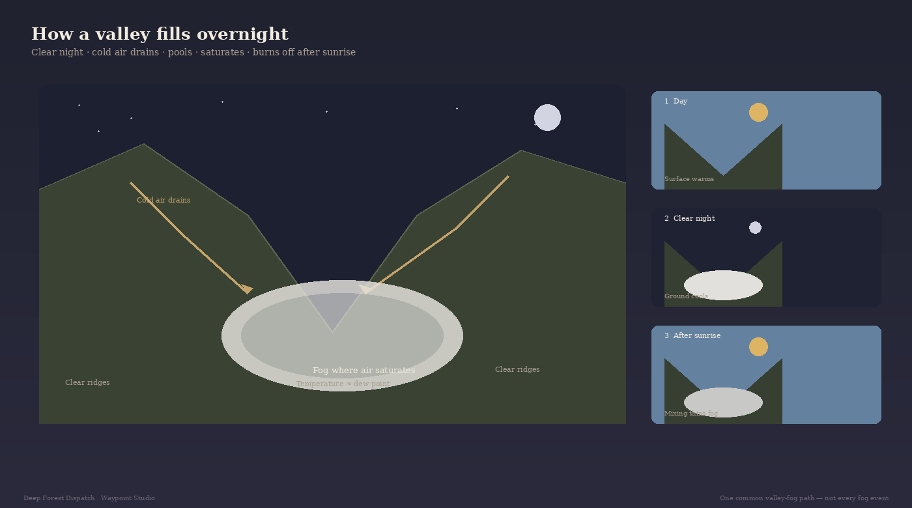

A white lake that was never water
Stand above a valley just after dawn and the floor may vanish under a continuous white sheet. Ridges stay clear. Roads drop into a wall of cloud. From orbit, the same event can look like white veins tracing every drainage.
That pattern is the clue: the fog is collecting where cold air collects. The satellite image above is an Australian Alps morning — the mechanism is familiar wherever quiet nights meet folded terrain.

Cooling, drainage, saturation
Under clear skies and light winds, the ground radiates heat to space after sunset. Air touching that surface cools with it — radiational cooling. Stronger winds mix warmer air from above; cloud cover acts like a lid. Quiet, clear nights favor the process.
Cooler air is denser. On slopes it slides downhill as cold-air drainage. Valleys trap it. Through the night the basin fills from the bottom up while ridges can stay comparatively milder and clearer. A shallow inversion often forms: cold air below, warmer air above.
Fog is cloud with its base on the ground. It appears when temperature approaches the dew point closely enough for vapor to condense. Cooling does much of the work; moisture from damp ground or streams can raise the dew point and help. Many of these fogs are densest near sunrise, when overnight cooling has run longest — while higher slopes may never saturate at all.
After sunrise
Sunlight warms the ground. The surface layer mixes, relative humidity falls, and fog thins, lifts, or breaks into patches — the familiar burn-off. Open flats can clear quickly; shaded mountain valleys often linger.
Deep winter cold pools can hold fog or low stratus for hours or days. Dawn valley fill is the common, photogenic case — not a rule that every fog must follow.
Other ways fog forms
This story is about valley radiation fog — overnight cooling plus drainage. Weather services also describe advection fog (moist air over a colder surface), upslope fog (air forced up terrain), and steam fog (cold air over warmer water). Real mornings can blend mechanisms. Ask what cooled, what moved, and where the moisture came from.
Waypoint does not forecast fog as a product. On the Dashboard you can still watch the ingredients that matter overnight — temperature falling toward dew point, humidity, and quiet weather — and use Scenes when you are chasing the ridge-above-the-cloud photograph. Observation, not a guarantee.